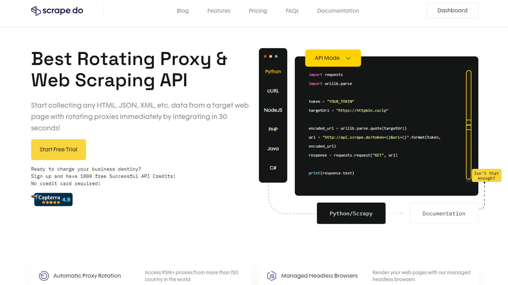

Data scraping, also known as web scraping, is the process of automatically extracting information or data from websites or web pages. It involves using software tools or scripts to access a website's content, retrieve specific data, and then store or use that data for various purposes. They are valuable for tasks like lead generation, market research, and social media monitoring.
Data scraping, also known as web scraping, is the process of automatically extracting information or data from websites or web pages. It involves using software tools or scripts to access a website's content, retrieve specific data, and then store or use that data for various purposes. Data scraping is commonly used to gather large amounts of data quickly and efficiently from websites, and it can be applied in various fields such as business, research, sales, marketing, and more.
Data scraping typically involves the following steps:
Sending Requests: The scraping tool sends HTTP requests to a target website's server, requesting the web pages' content.
Parsing HTML: Once the content is received, the tool parses the HTML (Hypertext Markup Language) of the web pages to locate and extract specific data elements, such as text, images, links, or tables.
Data Extraction: The tool identifies and extracts the desired data elements based on predefined rules or patterns. This can include product information, prices, contact details, reviews, and more.
Data Transformation: After extraction, the data may be cleaned, structured, and transformed into a more usable format, such as CSV, JSON, or a database.
Storage and Analysis: The scraped data is often stored in a database or file for further analysis, reporting, or integration into other applications.
WHAT IS A DATA SCRAPER?
A data scraper, also known as a web scraper, is a software tool or program designed to automate the process of data scraping or web scraping. It is used to extract specific information or data from websites and web pages quickly and efficiently. Data scrapers can vary in complexity, from simple scripts or browser extensions to more advanced tools with features like automatic IP rotation, CAPTCHA solving, and JavaScript rendering. These tools enable users to access and collect data from websites at scale, making data scraping a valuable resource for businesses and researchers.
One key feature of modern data scrapers is the "no-code" or "low-code" capability, which means that you can create and configure web scraping tasks without having to write custom code. Instead, no-code scrapers interact with the scraper through a user-friendly interface, defining what data to extract and how to extract it using visual tools and settings.
Data scrapers are commonly used to retrieve various types of data, such as contact information, user profiles, product details, or any other structured data, from different websites and online sources. They are particularly valuable for tasks like lead generation, market research, and social media monitoring.
40 BEST DATA SCRAPING TOOLS IN 2023
1. PHANTOMBUSTER
PhantomBuster is a data scraping tool focusing on automating data collection and outreach on various online platforms. Here are some examples of what PhantomBuster can do:
LinkedIn Automation: PhantomBuster can automate tasks on LinkedIn, including extracting data such as profile details and emails, sending connection requests with personalized messages, and automating outreach campaigns.
Sales Navigator Support: If you are a Sales Navigator user, PhantomBuster allows you to extract account and user information, send personalized messages, and automate outreach efforts.
Google Maps Data Extraction: PhantomBuster can scrape emails, phone numbers, and social media information from Google Maps search results, making it useful for your lead generation.
Web Scraping: PhantomBuster provides a "Data Scraping Crawler" that extracts email addresses, phone numbers, and social media information from any website.
Social Media Automation: PhantomBuster supports automation on platforms like Instagram, Twitter, Facebook, Reddit, and even YouTube. For instance, it can extract followers, commenters, media, and likers; auto-follow accounts; auto-like posts; and other social media-related tasks.
Customizable Workflows: You can create custom workflows tailored to your specific needs, enabling personalized outreach campaigns and data extraction tasks.
PhantomBuster is a valuable tool if you’re looking to streamline data scraping and automate your outreach efforts on various online platforms, particularly on LinkedIn and Sales Navigator.
Pricing: PhantomBuster offers a free trial and monthly billing starts at $69
Rating: PhantomBuster is rated 4.3/5 on G2 (38 reviews)
2. BROWSE AI
Browse AI is a data scraping tool that allows you to easily extract and monitor data from websites without the need for coding skills. Here are some features and capabilities of Browse AI:
Data Extraction: You can extract specific data from websites in the form of structured spreadsheets. It can extract product details from platforms like Amazon, Etsy, Best Buy, Expedia, Google Play, GitHu, Booking.com, and Airbnb, as well as social media platforms like TikTok, YouTube, Reddit, and Pinterest. Browse AI can also scrape data from Google Maps and Yellow Pages, making it useful for local business information.
Monitoring: Browse AI enables you to set up automated schedules for data extraction and receive notifications when changes occur on target websites.
Prebuilt Robots: The tool offers a collection of prebuilt robots tailored for various popular use cases. You can leverage these robots to start extracting data right away.
Bulk Processing: Browse AI supports the bulk execution of up to 50,000 robots simultaneously, allowing for efficient and large-scale data collection.
Scheduled Data Extraction: You can set up specific schedules for data extraction, ensuring your robots capture the most up-to-date information.
Location-Based Data Extraction: Browse AI can extract location-based data from websites, making it valuable for your location-specific data needs.
Captcha Solving: Browse AI can solve captchas, overcoming a common hurdle in web scraping. It can also handle pagination, scrolling, and site layout changes automatically.
Browse AI is a versatile data scraping tool suitable for a wide range of applications, from lead generation to market research and competitive analysis. Its user-friendly interface and no-code approach make it accessible to users with varying levels of technical expertise.
Pricing: Browse AI offers a free trial and monthly billing starts at $48.75
Rating: Browse AI is rated 4.8/5 on G2 (24 reviews)
3. CLAY
Clay's Chrome Extension offers a data scraping solution, allowing you to extract data from various websites with ease. Here's a breakdown of how it works and its capabilities:
Data Extraction: You can navigate to a website of your choice, such as Crunchbase or LinkedIn Sales Navigator, to scrape data. There are three primary scenarios:
Mapped Data: If Clay has already mapped the data on the webpage, you can directly access it. The tool is capable of detecting structured data.
Auto-Detected Lists: Clay can auto-detect lists on some webpages, simplifying your scraping process. You can add these lists to your workspace effortlessly.
Manually Mapped Data: For unstructured or challenging data sources, you can manually map the data to instruct Clay on how to scrape it correctly.
Structured Data Scraping: When scraping structured data, you can scroll through the webpage, and the extension will automatically detect and store the data. Clay can handle pagination, ensuring that all relevant information is captured.
Adding to Workspace: After scraping data, you can add it to the Clay workspace for further processing and analysis.
Data Enrichment: Once the data is in the workspace, you can leverage Clay's 70+ enrichments to gain deeper insights and extract valuable information.
Mapping Assistance: If you encounter difficulties mapping data manually, you can request assistance from Clay's team to correctly map the page.
Clay's Chrome Extension streamlines the data scraping process, saving you valuable time and effort that would otherwise be spent on manual data input. It provides a user-friendly interface for both structured and unstructured data sources, making it a versatile tool for your various web scraping needs.
Pricing: Clay offers a free trial and monthly billing starts at $149
4. INSTANT DATA SCRAPER
Instant Data Scraper is an AI-powered data scraping tool that predicts and extracts data from HTML pages without requiring custom scripts. Instant Data Scraper allows you to customize data selections for precise extraction, ensuring accuracy. This tool works with both small, lesser-known websites and major platforms like Amazon, Yellow Pages, etc., thanks to heuristic AI analysis. Instant Data Scraper eliminates the need for coding, JSON, or XML skills, making it accessible to non-technical users! Here are some of its features:
Dynamic Data Detection: Instant Data Scraper recognizes when dynamic data loads on web pages and adjusts extraction accordingly.
Custom Crawling Speed: It offers delay and maximum wait time customization for efficient crawling.
Pagination Support: This tool also handles pagination on websites, making it easy to extract data from multiple pages.
Automatic Navigation: It navigates automatically to the next page through buttons or links and supports websites with infinite scrolling features.
Data: Instant Data Scraper provides a preview of the extracted data with copy-and-paste support. It enables data export to Excel spreadsheets (XLS, XLSX) or CSV files and allows you to rename and filter extracted data columns.
Pricing: Instant Data Scraper is completely FREE
Rating: Instant Data Scraper is rated 4.9/5 on Chrome Web Store (3,132 reviews)
5. EVABOOT
Evaboot is a data scraping tool specifically designed for LinkedIn Sales Navigator, offering the following capabilities:
Data Extraction from LinkedIn Sales Navigator: Extract data from LinkedIn Sales Navigator in just one click using a Chrome Extension. You can extract a comprehensive range of data points, including names, job titles, LinkedIn profiles, location, number of connections, time in position, job descriptions, profile pictures, headlines, industries, and more.
Data Cleaning: You can clean the extracted data, removing emojis, special characters, and other irrelevant information to ensure that data is presented in a professional and readable format.
Search Results: Evaboot double-checks if the search results accurately match your search filters. It detects false positives and provides a match reason, helping you identify leads that don't fit your criteria.
Exporting Options: You can export your lists and searches from LinkedIn Sales Navigator to CSV files for easy integration with CRM systems, email marketing tools, or prospecting platforms.
Pricing: Evaboot offers a free trial and monthly billing starts at $29
Rating: Evaboot is rated 4.5/5 on G2 (30 reviews)
6. SCRAPERAPI
ScraperAPI offers a solution for data scraping, with a focus on ease of use, customization, and scalability. Here are some features and capabilities of ScraperAPI:
Integration and Customization: ScraperAPI is designed with developers in mind, making it easy to integrate into your applications. It's also highly customizable, allowing you to add parameters to enable JavaScript rendering, IP geolocation, residential proxies, rotating proxies, and more.
Async Scraper Endpoint: ScraperAPI introduces an Async Scraper endpoint that enables you to submit multiple large-scale web scraping jobs. This feature allows you to automate tasks without worrying about timeouts or retries, ensuring a constant data stream.
Efficient Data Retrieval: With the Async Scraper, you can focus on collecting data while the tool handles scraping millions of URLs. It manages timeouts, retries, and other complexities to return HTML data as quickly as possible.
Data Retrieval Options: After submitting a job, you receive a status URL to retrieve structured data. Alternatively, you can specify a Webhook for direct data delivery as soon as the scraping task is completed. This flexibility ensures you get data when, where, and in the format you need it.
Pricing: ScraperAPI offers a free plan and monthly billing starts at $49
Rating: ScraperAPI is rated 4.3/5 on G2 (11 reviews)
7. APIFY
Apify is a data scraping tool that empowers developers to build, deploy, and easily monitor web scraping and browser automation tools. Here are the key features and capabilities of Apify:
Development with Open-Source Tools: Apify simplifies web scraping with Crawlee, a library for building reliable scrapers in Node.js. It is compatible with Python and JavaScript, supporting tools like Scrapy, Selenium, Playwright, and Puppeteer, giving you the flexibility to choose your preferred coding language and framework.
Deployment: Transform your code into an Apify Actor, which are serverless microapps designed for easy development, execution, sharing, and integration. Apify provides the necessary infrastructure, proxies, and storage, eliminating the need for complex configurations. Apify also offers various deployment options, including a single CLI command or direct deployment from GitHub.
Data Storage and Export: You can use distributed queues of URLs for crawling, store both structured data and binary files, and export your datasets in formats such as CSV, JSON, Excel, and more for easy integration with other tools and systems.
Pre-built Actors: Apify offers a variety of pre-built Actors for specific use cases, including Amazon Product Scraper, Web Scraper, Twitter Scraper, YouTube Scraper, Puppeteer Scraper,Booking.com Scraper, and more.
Pricing: Apify offers a free plan and monthly billing starts at $49
Rating: Apify is rated 4.8/5 on G2 (101 reviews)
8. WEBSCRAPEAI
Webscrape AI is a no-code data scraping tool designed for effortless web data collection. You don't need coding skills to use it effectively. Here's what it offers:
Simple Setup: Just provide the URL and specify the items you want to scrape, and the AI scraper takes care of the rest.
Accurate Data: Webscrape AI utilizes advanced algorithms to ensure precise data collection, giving you confidence in the results.
Automation and Customization: You can automate your data collection process, saving time for other essential tasks, and tailor your data collection preferences easily to match your specific needs.
Webscrape AI is a user-friendly solution for efficient web data gathering without the complexities of manual scraping or coding.
Pricing: Webscrape AI offers a free trial and monthly billing starts at $27
9. ZENROWS
ZenRows is a data scraping tool with a focus on anti-bot bypass and ease of use. Here's what you need to know:
Anti-Bot Bypass: ZenRows handles all aspects of anti-bot bypass for you. It includes features like rotating proxies, headless browsers, and CAPTCHA solving, ensuring seamless data extraction from websites with strong security measures.
Multiple Programming Languages: ZenRows is compatible with various programming languages, including Python, Node.js, Java, PHP, Go, Ruby, C#, and cURL.
Integration: You can quickly integrate ZenRows into your projects by installing it through pip (Python's package installer) and using a straightforward code snippet.
Premium Proxies: The tool offers premium proxies to maintain anonymity and avoid IP bans while scraping data.
JavaScript Rendering: ZenRows supports JavaScript rendering, allowing you to interact with websites that heavily rely on client-side scripting.
Auto-Parsing: ZenRows simplifies data extraction by offering auto-parsing capabilities for popular websites. Instead of manually digging into HTML structures, you receive JSON data with the information you need.
Pricing: ZenRowsoffers a free trial and monthly billing starts at $49
Rating: ZenRows is rated 5/5 on Capterra (27 reviews)
10. OCTOPARSE
Octoparse is a data scraping tool designed to make web scraping accessible and efficient. Here are some of Octoparse's data scraping features:
No-Coding Web Scraping: With Octoparse, you can easily turn web pages into structured data without any coding knowledge.
AI Web Scraping Assistant: Octoparse incorporates the power of AI into its scraping process. It offers an AI web scraping assistant that helps you get started faster by providing auto-detection capabilities and timely tips at each step of the scraping process.
Automation with Cloud Solution: Octoparse ensures maximum scraping efficiency with its 24/7 cloud solution. You can schedule scrapers to gather data at precise intervals or just in time. The tool also supports automatic data export and OpenAPI integration.
Configurability: Octoparse offers features such as IP rotation, CAPTCHA solving, proxy support, and various actions like infinite scroll, dropdown handling, hover interactions, and AJAX loading handling.
Template Library: Octoparse offers a library of preset templates for hundreds of popular websites. You can use these templates to extract data instantly with minimal setup required.
API Integration: Octoparse offers an API that allows you to automate data acquisition processes within your own systems or connect to other systems of their choice. This API maximizes productivity by enabling control of crawlers and data collections programmatically.
Pricing: Octoparse offers a free plan and monthly billing starts at $75
Rating: is rated 4.3/5 on G2 (38 reviews)
11. BITSKOUT
Bitskout is a data scraping tool that offers a streamlined solution for extracting data from documents and emails with no coding required. Here are its key features:
Templates: Bitskout provides a templates library, making it easy to find and use pre-built templates for various data extraction tasks. If a template doesn't exist, you can create your own by loading an example file and dragging and dropping fields from the file to the target tool, such as Monday or Zapier. This feature supports various field types, including dates, emails, addresses, and more.
Support for Complex Documents: Bitskout can handle complex documents, even those with handwritten content or diverse formatting. It can automatically analyze the file and identify typical field names, streamlining the extraction process.
Custom Extraction: For challenging data extraction tasks, like parsing emails with varying formats, Bitskout offers a custom extraction feature. You can provide examples of the data you want to extract and train Bitskout to understand the patterns, making it adaptable to different data sources.
Bitskout empowers you to automate data collection from documents and emails efficiently, offering both pre-built templates and customizable options to suit your various extraction needs.
Pricing: Bitskout offers a free trial and monthly billing starts at $59
12. FINALSCOUT
FinalScout is a specialized tool designed for extracting valid email addresses from LinkedIn and turning LinkedIn connections into email lists. Here are its key data scraping capabilities:
LinkedIn Email Extraction: FinalScout allows you to export email addresses from various LinkedIn sources, including regular LinkedIn searches, LinkedIn Sales Navigator searches, LinkedIn Recruiter, LinkedIn group members, and LinkedIn event attendees.
LinkedIn Guidelines Compliance: FinalScout emphasizes its commitment to honoring LinkedIn's guidelines, ensuring that you can safely extract data from LinkedIn without violating its terms of use or risking your LinkedIn accounts.
Professional Email Lookup: In addition to LinkedIn data, FinalScout offers a feature to find professional email addresses for individuals based on their company domain name, articles, or LinkedIn URLs.
FinalScout's primary focus is on helping you extract and utilize email addresses effectively from LinkedIn, making it a valuable tool for your sales, marketing, and networking needs and expanding your reach, and connecting with LinkedIn users via email.
Pricing: FinalScout offers a free trial and monthly billing starts at $50
Rating: FinalScout is rated 4.7/5 on G2 (44 reviews)
13. BRIGHT DATA
Bright Data offers a suite of data scraping and web crawling tools and services. Here are some capabilities of Bright Data's data scraping solution:
No Code Solution: Access structured and accurate datasets without the need for coding. Bright Data offers custom dataset creation if your required data is not available.
Tools for Developers: Bright Data allows you to build web scrapers quickly using existing templates for popular websites. It provides a Playwright/Puppeteer-compatible browser with built-in website unblocking actions. Bright Data also enables scraping and parsing of search engine results.
Website Unblocking Automation: Bright Data's tools augment Puppeteer, Playwright, and Selenium scrapers with website unblocking automation features–including proxy rotation, CAPTCHA solving, browser fingerprinting, automatic retries, and more.
Ready-Made Functions: Bright Data offers over 73 ready-made JavaScript functions and a community of customers has built over 38,000 scrapers.
Global Proxy Endpoints: With Bright Data, you can access proxies in 195 countries for geo-targeted scraping.
Bright Data offers a versatile data scraping solution with a wide range of features and tools for both non-developers and developers, making it suitable for various web scraping needs.
Pricing: Bright Data offers a free trial and pricing starts at $0.110/GB
Rating: Bright Data is rated 4.6/5 on G2 (156 reviews)
14. SCRAPE.DO

Scrape.do offers a solution for web scraping, focusing on simplifying the process of data collection while providing the tools and support needed to ensure successful scraping activities, even on websites with strict restrictions. Here are some details about its features:
Rotating Proxies: Scrape.do provides access to over 95 million proxies from more than 150 countries worldwide. These rotating proxies allow you to scrape data from websites with tight restrictions, ensuring you can crawl virtually anywhere without limitations.
Geotargeting: With Scrape.do, you can target specific countries such as the USA, UK, Canada, Turkey, or the EU before initiating your web scraping tasks. This geotargeting feature ensures you are positioned where you need to be for your data collection needs.
Bypassing Blocks & Captcha: Scrape.do automatically detects if there are any blocks related to your proxy location and promptly assigns an IP from a new location to avoid disruptions.
Backconnect Proxy: Scrape.do assigns a different IP for each access request, ensuring that your scraping activities remain discreet and untraceable. This method helps prevent getting blocked by websites.
Play with Browser: Scrape.do provides a "PlayWithBrowser" feature that allows you to interact with web pages by clicking buttons, opening popups, and exploring targeted websites. This simplifies the process of navigating and extracting data from complex web pages.
Customization: Scrape.do allows you to customize your web scraping API according to your specific market research needs. You can adjust request headers, cookies, method types, geographic locations, and JavaScript rendering to tailor the scraping process to your requirements.
Pricing: Scrape.do offers a free plan and monthly billing starts at $29
Rating: Scrape.do is rated 5/5 on Capterra (22 reviews)
15. SCRAPINGDOG
Scrapingdog offers a comprehensive Web Scraping API with several features and capabilities:
Over 40 Million IPs: Scrapingdog provides access to over 40 million IPs. Each new request is routed through a different IP, which enhances the success rate and minimizes the risk of getting blocked. IPs are available from major countries around the world.
Render Websites with Headless Chrome: The API uses multiple instances of headless browsers to enable scraping from websites that render data using JavaScript. This capability ensures that you can access and extract data from a wide range of websites.
Dedicated APIs: Scrapingdog offers dedicated APIs for specific platforms, including Linkedin Scraping API, Google Scraper API, and Zillow Scraper API. These dedicated APIs are tailored to the respective platforms and offer specialized functionality.
Price Monitoring: The API can be used for price monitoring on e-commerce, hotel, real estate, and stock websites. You can track prices and reviews from multiple sources to make informed decisions.
No-Code Solutions: Scrapingdog offers a no-code solution called the Affiliate Egg Pro Plugin, which allows users without technical backgrounds to scrape websites without writing code.
Screenshot API: Scrapingdog's Screenshot API enables you to capture screenshots of web pages. Users can choose between full or partial images when making queries.
Pricing: Scrapingdog offers a free trial and monthly billing starts at $30
Rating: Scrapingdog is rated 3.3/5 onG2 (3 reviews)
16. FOLLOW
Follow offers data scraping capabilities tailored for LinkedIn. Here are the key features:
LinkedIn Post Liker Extraction: You can turn LinkedIn Post Likers into potential leads and achieve a remarkable increase in your reply rate.
Lead Extraction: Follow allows you to extract leads from any LinkedIn post, offering access to more than 20 valuable data points. This includes information like First Name, Job Title, Email, Company Name, Company Size, and more.
Export: Extracted leads can be conveniently exported to a CSV file or directly integrated with your preferred sales tools.
Follow's data scraping tool for LinkedIn simplifies the process of your lead generation, making it easy to engage with potential prospects and grow your pipeline.
Pricing: Follow offers a free plan and monthly billing starts at $49
17. SCRAPINGBEE
ScrapingBee is a data scraping tool that offers several key capabilities to facilitate web scraping tasks. Here are some of its features:
Headless Browsers and Proxy Rotation: ScrapingBee handles headless browsers and rotates proxies, allowing you to scrape web pages more efficiently and bypass rate limiting. It manages thousands of headless browser instances using the latest Chrome version, ensuring that web pages are rendered as if they were accessed by a real browser.
Custom JavaScript Snippets: ScrapingBee supports custom JavaScript snippets, giving you the flexibility to run specific scripts on target websites. This is helpful when you need to perform actions like clicking buttons, waiting for elements to appear, or executing custom JavaScript code during the scraping process.
Search Engine Result Page (SERP) Scraping: ScrapingBee offers a Google search API that simplifies the extraction of search engine results.
No-Code Web Scraping: ScrapingBee offers a "Make" integration, allowing you to create custom web scraping engines without writing any code.
Pricing: Scraping Bee offers a free trial and monthly billing starts at $49
Rating: Scraping Bee is rated 4.9/5 on G2 (69 reviews)
18. NIMBLE
Nimble offers a data scraping tool called Nimble API, designed to streamline web data collection from any public web data source. Here are some information about Nimble's data scraping capabilities:
Unlimited Access: Nimble API provides simplified, programmatic interfaces for accessing data from any public web data source. This means you can collect data from various websites effortlessly.
Global Flexibility: Nimble API allows you to access web data from any country, in any language, and on any device. This flexibility ensures you can gather data from diverse sources and locations.
Effortless Data Gathering: Nimble API simplifies the data collection process by offering serverless, fully-managed data pipelines. You can instantly gather data from any website without the hassle of crawling, scanning, scraping, or parsing.
Direct Delivery to Any Storage: Nimble delivers the collected data directly to your preferred storage solutions, such as Amazon S3 or Google Cloud storage buckets. You can configure the delivery details, permissions, and data formats, ensuring efficient use of your data.
Data Collection Technology: Nimble API employs advanced AI models for the intelligent structuring of data from any source. This ensures the accurate organization of data into structured formats, making it easier for analysis. It also provides streamlined data point extraction for key information like product prices and SERP positioning.
Pricing: Nimble starts at $255/mo
19. OXYLABS
Oxylabs offers a range of Scraper APIs designed to simplify your web data scraping tasks. Here are some details about Oxylabs' data scraping capabilities:
SERP Scraper API: Oxylabs provides city-level Search Engine Results Page (SERP) data from major search engines and offers localized search results for targeted analysis. This is iIdeal for collecting keyword data, brand monitoring, and tracking ads data.
E-Commerce Scraper API: This tool is also designed for scraping e-commerce product pages, covering thousands of e-commerce websites. It utilizes an adaptive parser for structured data extraction in JSON format.
Real Estate Scraper API: Oxylabs allows real-time property data gathering from popular real estate websites such as Zillow and Redfin.ated solution for collecting data from diverse web sources. It eliminates manual work, handles data delivery, and employs advanced AI models for structured data organization.
You can use Oxylabs Scraper APIs for various purposes, including price monitoring, SEO monitoring, travel fare aggregation, review monitoring, brand protection, cybersecurity, market research, email protection, ad verification, and alternative data collection.
Pricing: Oxylabs starts at $15/mo
Rating: Oxylabs is rated 4.5/5 on G2 (53 reviews)
20. SCRAPESTACK
Scrapestack offers a data scraping API with a range of features and capabilities tailored for web scraping tasks. Here's a breakdown of Scrapestack's data scraping capabilities:
Millions of Proxies & IPs: Scrapestack provides access to an extensive pool of over 35 million data centers and residential IP addresses. These IP addresses are distributed across various global ISPs, ensuring diverse and reliable coverage. Its support for real devices, smart retries, and IP rotation enhances the scraping experience.
100+ Global Locations: You can choose from more than 100 global locations when sending web scraping API requests. Alternatively, you can opt for random geo-targets and mimic requests from major cities worldwide.
Scrapestack can be used to scrape data from various platforms, including Google, Twitter, Instagram, Facebook, Reddit, YouTube, TripAdvisor, Booking.com, and more You can leverage the API to extract information, such as rankings, reviews, social media data, and search results.
Pricing: Scrapestack offers a free plan and monthly billing starts at $19.99
21. WEB SCRAPING API
WebScraping API offers a suite of data scraping capabilities, including developer APIs, custom APIs, and managed data extraction services. Here are the features and offerings of WebScraping API:
Data Extraction Service: WebScraping API offers a managed data extraction and handles the intricate extraction process, ensures legal compliance, and maintains data quality, allowing you to focus on deriving insights.
Customized Data: If you require tailored data solutions, WebScraping API offers data personalization, extending existing datasets, or collecting unique data according to specific requirements.
Data for Your Business: WebScraping API caters to various business sectors with specialized data solutions, including e-commerce, news and articles, business places, search, job postings, social media, real estate, brand monitoring, price intelligence, financial data, ad verification, market research, travel, SEO & SEM, website change monitoring, alternative data, cybersecurity, and review monitoring.
Pricing: WebScraping API offers a free trial and monthly billing starts at $28
22. ScrapingAnt
ScrapingAnt offers data scraping with a focus on web scraping without encountering blocking issues. Here are some features and offerings of ScrapingAnt:
Web Scraping Without Getting Blocked: ScrapingAnt handles headless browsers and rotating proxy servers to ensure smooth and uninterrupted web scraping. It provides unlimited parallel requests, allowing you to scrape data efficiently.
Proxy Servers: ScrapingAnt boasts a proxy pool with over 3 million proxy servers located around the world. This proxy network helps you avoid IP blocking and access websites without restrictions.
Real Browser Experience: The service opens web pages as if they were being accessed in a real browser, ensuring accurate data extraction.
ScrapingAnt is suitable for various web scraping tasks, including real estate scraping, price monitoring, and review extraction.
Pricing: ScrapingAnt offers a free trial and monthly billing starts at $49
Rating: ScrapingAnt is rated 5/5 on Capterra (8 reviews)
23. Lead Scrape
Lead Scrape is a data scraping tool tailored for lead generation in the B2B sector. Here are some specific features and offerings of Lead Scrape:
Discover B2B Companies in Any Industry: Lead Scrape allows you to uncover B2B companies across various industries and access their contact information through its extensive database. You can gain access to comprehensive company profiles, including details such as addresses, phone numbers, websites, contacts, emails, and more. x
Leads in Any Niche: Whether you're targeting a specific industry or niche, Lead Scrape can help you discover potential leads in various sector. Ientify the key decision-makers within a company and access their contact details, enabling you to connect with the right individuals. Lead Scrape's user-friendly software allows you to input a location and a keyword to find quality leads in your chosen industry.
Email Address Extraction: Obtain the email addresses associated with any company, facilitating targeted email marketing campaigns.
Pricing: Lead Scrape offers a 1 Year License that starts at $97
Rating: Lead Scrape is rated 4.8/5 on Capterra (11 reviews)
24. TEXAU
TexAu is a data scraping tool that empowers you to extract data from a wide range of websites and platforms, including Facebook, Instagram, LinkedIn, Google, Twitter, Quora, Slack, YouTube, Reddit, Craigslist, and many more. Here are some key highlights of TexAu's data scraping capabilities:
Multi-Platform Data Extraction: TexAu allows you to extract data from various online platforms, making it a versatile tool for lead generation and research across social media, search engines, and more. You can extract upvoters from ProductHunt, extract search results from Yellow Pages, extract leads from Reddit posts, and many more.
Automations Library: TexAu boasts an extensive library of over 180 ready-to-use automations across more than ten platforms, including LinkedIn, Twitter, Google, and others.
TexAu's scraping capabilities span across a wide range of platforms, making it a valuable tool if you’re looking to automate lead generation, data enrichment, and growth strategies. Whether you need to extract LinkedIn profiles, scrape Twitter data, or gather information from other online sources, TexAu offers a comprehensive solution.
Pricing: TexAu offers a free trial and monthly billing starts at $29
Rating: TexAu is rated 4.3/5 on G2 (57 reviews)
25. CAPTAIN DATA
Captain Data is a no-code platform designed for data extraction, aggregation, and integration, offering robust data scraping capabilities for various purposes. Here are some details about its features:
Data Scraping: Captain Data allows you to create databases of leads and companies from over 30 sources, including popular platforms like LinkedIn, Google, Indeed, and even your CRM.
Extract Data from Anywhere: Captain Data provides the flexibility to extract data from any source on the web without limitations. This means you can gather information from a wide range of websites and platforms.
Automated Templates: Captain Data offers a collection of automated scraping templates that simplify tasks like market research and lead generation.
LinkedIn Scraper: Captain Data enables you to scrape data from LinkedIn and Sales Navigator, making it easier to find and target potential leads and companies.
Geographic Company Scraper: Captain Data also allows you to scrape and find local companies within a specified geographic area, streamlining your local targeting efforts.
Pricing: Captain Data offers a free trial and plans start at $399/month, billed annually
Rating: Captain Data is rated 4/5 on G2 (21 reviews)
26. SCRAPYBIRD
Scrapybird's data scraping capabilities are designed for B2B email extraction from Twitter, offering a cloud-based and automated solution without the need for user accounts or proxies. This approach allows you to connect with individuals genuinely interested in your products or services!
B2B Email Scraping from Twitter: Scrapybird specializes in scraping B2B email addresses from Twitter, allowing you to target potential business leads interested in your niche.
Cloud-Based Automation: Scrapybird operates entirely in the cloud, providing a hassle-free and automated solution for data scraping.
No Account or Proxies Required: Unlike many other scraping tools, Scrapybird doesn't necessitate user accounts or the use of proxies, simplifying the scraping process.
Targeted Email List Generation: By scraping Twitter accounts or tweets, you can pinpoint individuals interested in your niche based on their Twitter activity.
Pricing: ScrapyBird offers a free trial and monthly billing starts at $49
27. DOUBLE
Double is a data scraping tool that empowers you to extract valuable information for various data-related tasks. Here are some of its key scraping capabilities:
Scrape LinkedIn Profiles: Double enables you to scrape essential details from LinkedIn profiles, such as job history, education, and more.
Website Text Scraping: You can scrape text from websites and utilize this data for various purposes, such as lead qualification and research.
Scrape Company Data: Double can scrape data from company websites, including information about their industry, location, and Bloomberg tickers.
LinkedIn URL Extraction: Starting with a list of names, Double can scrape LinkedIn profile URLs, making it easier to connect with leads on the platform.
Pricing: Book a demo to view Double’s pricing plans
28. SCRAPESTORM
ScrapeStorm is an AI-powered visual web scraping tool that offers a range of capabilities for data extraction and automation. Here are some functionalities of ScrapeStorm:
AI-Powered Data Extraction: ScrapeStorm employs artificial intelligence algorithms to intelligently identify various types of data on web pages. It automatically recognizes List Data, Tabular Data, and Pagination Buttons, reducing the need for manual rule setup. ScrapeStorm can automatically identify elements like lists, forms, links, images, prices, phone numbers, and emails.
Visual Click Operation: The tool provides a Flowchart Mode where you can interact with web pages visually. You can click on web elements according to software prompts, mimicking manual browsing behavior.
Multiple Data Export Methods: Your scraped data can be exported in various formats, including Excel, CSV, TXT, HTML, MySQL, MongoDB, SQL Server, PostgreSQL, WordPress, and Google Sheets.
Pricing: ScrapeStorm offers a free plan and premium plans start at $49.99/month, billed annually
Rating: ScrapeStorm is rated 4.2/5 on G2 (14 reviews)
29. SOCIAL REACH
Social Reach offers data scraping capabilities focused on expanding outreach efforts and engaging with leads at scale. Social Reach specializes in scraping social media data to help expand your outreach efforts. It focuses on lead identification and email acquisition from influencers on platforms like YouTube, Instagram, Twitter, and TikTok. Here are some details about Social Reach's data scraper:
Platform Coverage: Social Reach scrapes data from popular social media platforms, including YouTube, Instagram, Twitter, and TikTok.
Lead Identification and Email Acquisition: The tool identifies leads, particularly influencers, who are relevant to your company's needs. Social Reach extracts emails from these influencers' profiles or engagement channels.
Social Reach's data scraping capabilities are designed to support various business objectives, including, expanding micro-influencer programs, expanding affiliate programs, lead generation, recruiting influencer users, talent recruitment, and custom Facebook audiences.
Pricing: Contact Social Reach to view their pricing plans
30. EXPORTAPOLLO.IO
ExportApollo.io is a data scraping tool tailored for accessing Apollo leads quickly and efficiently. How to Get Started:
Submit the Form: Begin by clicking the "Get your leads" button and filling out the necessary information to ensure ExportApollo.io has everything ready to send.
Wait Up to 5 Minutes: Once you've purchased a set of contacts, ExportApollo.io will require approximately 5 minutes to process and send them to your email.
Receive Leads’ Emails: You'll receive an email containing the leads you've requested. With this data in hand, you can kickstart your outbound campaigns, making the most of your acquired leads.
ExportApollo.io's data scraping tool specializes in quick and efficient access to Apollo leads. It offers rapid export capabilities, cost-effectiveness by eliminating the need for hourly VAs, and a flexible pricing model that aligns with your business requirements. This tool is designed to simplify the process of accessing and utilizing valuable leads for your business needs.
Pricing: ExportApollo.io starts at $15.99/month
31. PILOTERR
Piloterr offers a set of data scraping capabilities designed to simplify web scraping. Here are key features and offerings provided by Piloterr's data scraping tool:
Ready-to-Use APIs: Piloterr provides access to more than 50 ready-to-use APIs that cover a wide range of data sources and extraction needs. These APIs include various functionalities for data extraction, making it easy to retrieve the information you need from different platforms.
HTML Scraping API: Piloterr offers an HTML scraping API that enables you to extract data from web pages efficiently. It is designed to handle complex websites and provides advanced HTML parsing capabilities.
Proxy Pools: Piloterr offers dedicated proxy pools for seamless and efficient scraping. These private proxy pools are ethically tested and selected to ensure reliability, speed, and privacy during data extraction.
Bypassing Barriers: Piloterr's scraping capabilities include methods to bypass common barriers used by websites to prevent scraping, such as Cloudflare, Akamai, PerimeterX, and DataDome.
Data Enrichment: Piloterr allows you to enrich your CRM and databases with insights from a vast database of over 60 million companies. This includes rapid enrichment processes, daily updates, and seamless integration with your existing tools, products, or CRMs.
Pricing: Piloterr starts at $49/mo
Rating: Piloterr is rated 5/5 on Capterra (3 reviews)
32. PROSPECTOO
Prospectoo offers a range of data scraping capabilities focused on B2B lead generation and personalized outreach. Here's a breakdown of its key features and offerings:
Lead List Building: Prospectoo enables users to quickly build B2B lead lists containing over 1500 leads in just minutes. The lists include information about leads, such as their names, roles, company details, locations, email addresses, and LinkedIn profiles.
Email List Extraction: The platform provides a reliable bulk B2B email extractor and verifier. This tool helps reduce email bounce rates and allows you to scale your email outreach efforts effectively.
Account List: Prospectoo offers a detailed list of industry-specific accounts. This list includes information like company names, employee counts, and LinkedIn URLs.
Real-Time Data Extraction: Prospectoo offers real-time lead list extraction with the most accurate and up-to-date profiles. The platform also allows you to filter and select data fields tailored to your specific requirements, facilitating bulk extraction of relevant data.
Pricing: Prospectoo offers a free plan and premium plans start at $99/mo
Rating: Prospectoo is rated 4.8/5 on G2 (2 reviews)
33. DATABAR
Databar offers a set of data scraping capabilities designed to simplify data acquisition and enrichment. Here's a breakdown of its key features:
Wide Range of Data Providers: Databar provides access to over 1,000 APIs from various data providers, all accessible through a familiar spreadsheet UI. You can easily enrich your data, scrape the web, and create complex data flows, all from a single platform.
Web Scraping Automation: With Databar, you can set up custom web scrapers in under 2 minutes, without the need for proxies, extensive configurations, or developer assistance. This allows for the automation of web scraping tasks, making it efficient and accessible for users.
Pre-built Scrapers: Databar offers thousands of pre-built connectors that enable users to gather data from virtually any website worldwide. These pre-built scrapers require zero configuration or ongoing maintenance, streamlining the data collection process.
Enrichment and Data Combination: Databar allows you to enrich data by combining multiple data sources.
Visualization and Analytics: Databar offers a full suite of visualization and analytics tools. You can group rows, build visualizations, and analyze data directly within the platform.
Pricing: Contact Databar to view their pricing plans
34. DIFFBOT
Diffbot is a data scraping tool that offers the following features:
Knowledge Graph: Diffbot contains a vast repository of knowledge from 1.2 billion public websites, covering news, organizations, people, and more.
Content Extraction: The tool is capable of scraping various web content types (articles, products, discussions) without complex rules.
Human-like Understanding: Diffbot classifies web pages into 20 possible types, enabling accurate categorization of content.
Structured Data: Diffbot transforms unstructured web data into structured formats like JSON or CSV for seamless integration.
Advanced Customization: The tool also provides advanced settings if you require more customization.
Pricing: Diffbot starts at $299/mo
Rating: Diffbot is rated 4.9/5 on G2 (29 reviews)
35. SCRUPP
Scrupp's data scraping tool for Sales Navigator empowers you to extract, clean, and enrich lead data from LinkedIn's Sales Navigator platform. This data can then be used for various purposes, including email campaigns, CRM integration, and analysis, helping businesses efficiently connect with potential leads and improve their outreach efforts.Here are the features of Scrupp's data scraping tool for Sales Navigator:
Export from Sales Navigator: You can export high-quality leads from LinkedIn's Sales Navigator and gather accurate contact information from Sales Navigator profiles.
Clean Data for Email Campaigns: Scrupp can remove extraneous symbols and streamline data fields, this ensures data cleanliness and accuracy for email campaigns and CRM integration.
Access Blocked Profile Data: With Scrupp, you can retrieve data from blocked LinkedIn profiles. This helps you gain valuable insights without manually searching through blocked accounts.
Find Personal Email Addresses: Identify personal email addresses from your data.
Email Verification: Verify the validity of email addresses in your data with Scrupp and improve the effectiveness of your email campaigns by ensuring email deliverability.
Pricing: Scrupp starts at $2/mo
36. ENRICH IQ
Enrich IQ offers a streamlined and cost-effective solution for obtaining marketing data from Apollo and other sources. Here are the steps involved:
Apollo Search URL: You can start by conducting a search on Apollo, for instance, to find CEOs in a specific location, such as London. Enrich IQ does not require a paid Apollo account. You can perform searches with a free Apollo account. After performing the search on Apollo, you need to copy the search URL.
Enrich IQ Platform: Visit the Enrich IQ platform and locate the section where the Apollo search URL needs to be pasted. You must provide a valid email address where you will receive the leads you’re about to obtain. You can select the number of prospects you need and specify your preferred location.
Quick Data Delivery: After successful payment, you’ll receive your marketing data within seconds in your email address with a download link.
Enrich IQ can scrape up to 50,000 prospects in less than 30 seconds, making it a fast and scalable solution for obtaining marketing data. This process enables you to efficiently gather marketing data without the need for a paid Apollo account and receive it promptly in your inbox, allowing for quick access to valuable leads for marketing campaigns and outreach efforts.
Pricing: Enrich IQ starts at $3/mo
37. DATAMINER
DataMiner is a web scraping tool available as a Google Chrome Extension and Edge Browser Extension. It offers a wide range of features and capabilities for professional data miners. Here are some details of its data scraping capabilities:
Customized Extraction Rules: You can choose from over 60,000 data extraction rules within Data Miner or create your own customized extraction rules tailored to your specific data needs.
Single Page and Multi-Page Scraping: DataMiner can be used to scrape data from a single web page or crawl an entire website, extracting data from multiple pages, such as search results, product listings, contact information, emails, phone numbers, and more.
Automation and Interaction: DataMiner can perform automated interactions with web pages, including clicking on buttons and links, navigating subpages, opening pop-ups, and scraping data from them.
Pagination and Form Filling: It can automatically handle pagination, navigate to the next page, and scrape content. It also offers form-filling automation for data entry tasks.
Pricing: DataMiner offers a free plan and premium plans start at $19.99/mo
Rating: DataMiner is rated 4.8/5 on G2 (6 reviews)
38. AUTOMA
Automa is a versatile browser extension designed for browser automation tasks. It can be used for various purposes, including data scraping. Here are some data scraping capabilities and examples of functions that can be accomplished using Automa:
Scraping Google Results: Automa allows you to scrape Google search results for a given keyword. You can extract data from up to 10 Google results and transfer them to a Google Sheet.
Extracting Instagram Profile Posts and Comments: With Automa, you can extract data from Instagram profiles, including post URLs, likes counts, and comments counts. Automa also allows you to collect data on Instagram post comments, including usernames and comments.
Simple Web Crawler: Automa includes a simple web crawling feature that can be used for learning purposes. It allows you to navigate web pages and collect data programmatically.
Scraping Twitter: Automa can scrape data from Twitter accounts, including information about profiles and followers. You can export this data for further analysis. You can also create multiple Twitter search queries and export tweets along with metadata to a CSV file.
Scraping Instagram Followers: Automa enables you to retrieve a list of followers from a public Instagram user profile and export the data to a CSV file.
Pricing: You can get Automa for Chrome for free
Rating: Automa is rated 4.7/5 on Chrome Web Store (119 reviews)
39. IMPORT.IO
Import.io is a data scraping tool that offers a range of features and capabilities for gathering web data without the need for coding. Here are some details about Import.io's data scraping capabilities:
Handling Complex Sites: Import.io can navigate and scrape data from websites that present challenges such as captchas, logins, and complex structures. Its interaction mode and AI capabilities help overcome these obstacles.
Data Delivery: Import.io provides options to deliver the collected data in various formats, including JSON, CSV, or directly to a Google Sheet for further analysis.
API Integration: Import.io offers APIs that allow you to seamlessly integrate web data into your business processes, applications, analysis tools, and visualization software.
Multi-URL Training: You can train the same data extractor to work with multiple pages displaying different variations of data. This is particularly useful when a website offers different data formats on similar page types.
Website Screenshots: Capture and save screenshots of web pages during data extraction to maintain an auditable record of the extracted data, enhancing compliance and accuracy.
XPath & Regex: For advanced users, Import.io supports custom extraction rules using XPath and RegEx, making retrieving hidden data and configuring complex extractions possible.
Pricing: Import.io offers a free trial and plans start at $399/mo
40. NETPEAK
Netpeak Spider is a data scraping and website analysis tool that offers several valuable capabilities. Here are some benefits of Netpeak Spider:
Speed and Efficiency: Netpeak Spider can crawl up to 500,000 URLs in just 2.5 hours, allowing you to save time for other essential tasks.
Data Exploration: You can take a deeper look at your data by aggregating, segmenting, and filtering website crawling results. Additionally, you can import custom data and calculate PageRank effortlessly.
Built-In Web Scraper: Netpeak Spider includes a built-in website scraper, enabling you to extract all the necessary data from any website efficiently.
Templates for Settings and Data Export: Netpeak Spider offers the flexibility to create custom templates for crawling settings, filters, and segments. It also provides preset default templates. Data can be exported in various formats such as CSV, XLSX, or PDF while preserving sorting, grouping, column width, and order.
Site Scraping and Web Data Extraction: You can use up to 100 conditions and four types of search (contains, Regexp, XPath, CSS) to scrape and extract web data.
Pricing: Netpeak starts at $7/mo
Rating: Netpeak is rated 4.9/5 on G2 (105 reviews)
DISCOVER MORE TOOLS
Are you in search of additional AI sales tools? Look no further than our software section at coldiq.com/tools, where you will find a selection of 400+ highly rated tools across numerous categories. From finding new leads to nurturing existing connections and automating your outreach efforts, we have a tool to suit your needs. Don't miss out on the opportunity to enhance your sales strategy – click here to discover the perfect tool!
CONCLUSION
In conclusion, data scraping tools are essential components if you are looking to extract valuable information from websites and online sources. These tools offer a wide range of capabilities, from automating data extraction tasks to handling complex web interactions and handling large volumes of data. Whether you need to gather market research, monitor prices, find leads, or perform any other data-related task, there is likely a data scraping tool that can simplify the process!
The data scraping tools we discussed above offer various features, including the ability to scrape data from websites, interact with web pages, handle CAPTCHAs, and export data in different formats. Additionally, some tools provide specialized APIs for customized data extraction, while others offer pre-built templates for specific websites or industries.
When selecting a data scraping tool, it's important to consider factors such as the complexity of your scraping needs, the scale of your operations, and your coding expertise. Many tools cater to both beginners and advanced users, making data scraping accessible to a wide range of professionals.
Find your prospects’ mobile phone numbers using FullEnrich, a waterfall enrichment software that maximizes your data coverage and boosts your sales efforts. It searches over 15 data vendors’ databases to find your prospect’s valid email addresses and phone numbers.
Imagine if there was a tool that could do the same research in a fraction of the time, all while verifying every data point along the way. This is precisely what data enrichment tools were built to do.
The Clay X ColdIQ event in Barcelona was the best opportunity to see familiar faces in the industry and connect with people who share the same passion for outbound strategies.